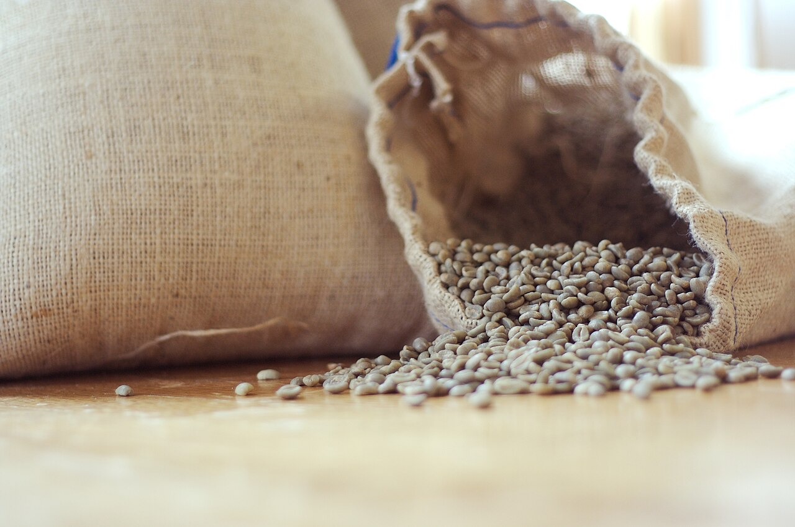
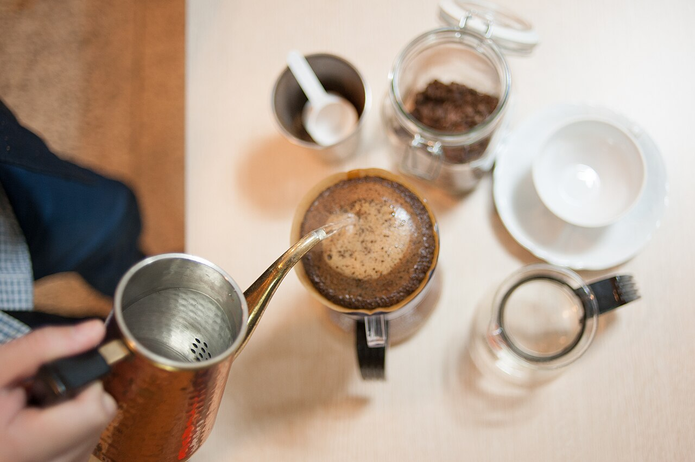
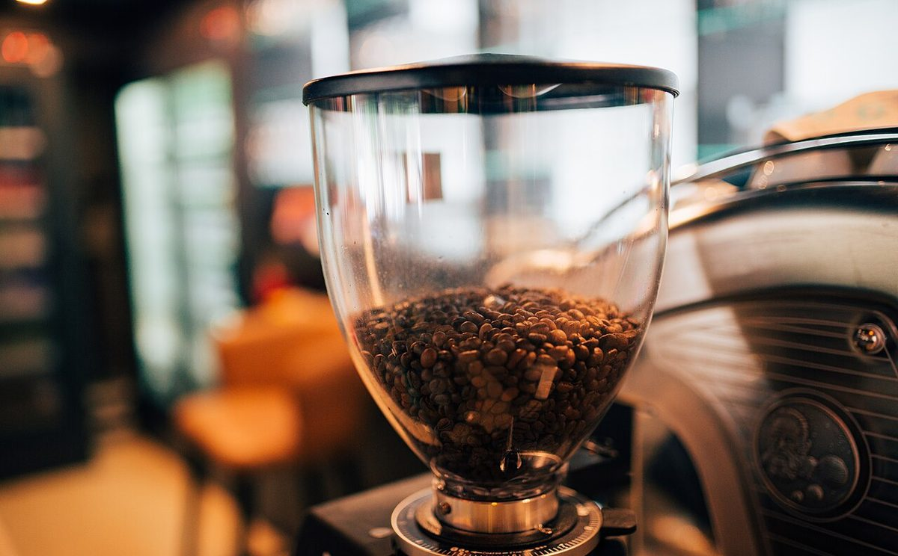

ABOUT
お店の由来・想い
千歳駅から歩いて数分、栄町にあるコーヒースタンド&ロースタリーです。千歳市で長く続くコーヒー豆専門店の直営カフェとして紹介されており、もとは「千葉コーヒー」という店名で、2020年9月に現在の名前へリニューアルしたと食べログに記載があります。
自家焙煎の豆の販売とテイクアウトが中心で、席は小さな丸椅子が2席ほど。ふらりと立ち寄って、淹れたてを受け取る小さなスタンドです。
店名の由来は確認できませんでした。以下は制作側のイメージです。「オールトーンズ=すべての色合い」から、生豆の緑、浅煎りの薄茶、深煎りの黒に近い茶色まで、焙煎で変わる豆の色の移り変わりをこのページの配色にしました。









VOICE
口コミ(イメージ例)
イメージ例
散歩の途中に立ち寄って、豆の香りに足が止まりました。テイクアウトの一杯を片手に駅まで歩くのが楽しみです。
イメージ例
浅めと深めで味わいがはっきり違い、飲み比べたくなります。次は豆も買って帰りたいです。
イメージ例
小さなお店ですが、淹れてもらう時間まで含めて落ち着きます。仕事前の朝の習慣になりそうです。
※創作のイメージ例です。実在のお客様の声ではありません。